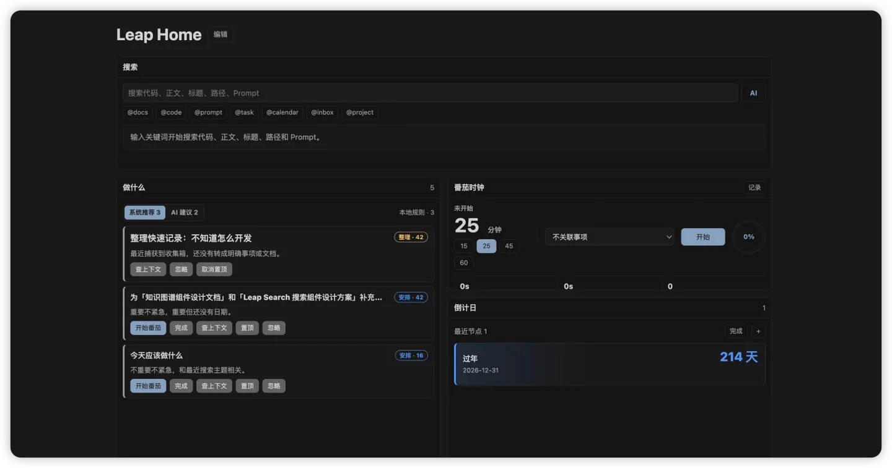
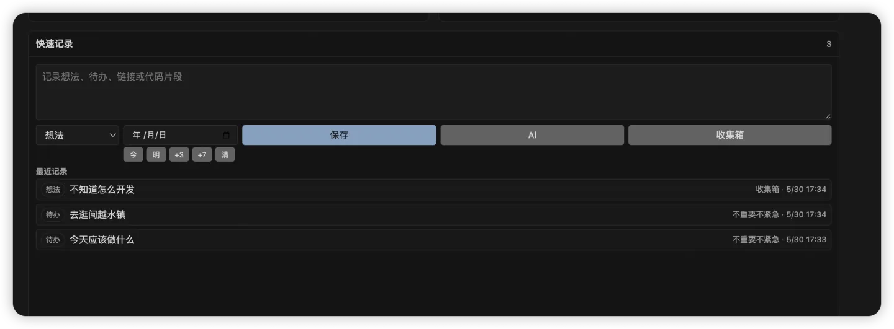
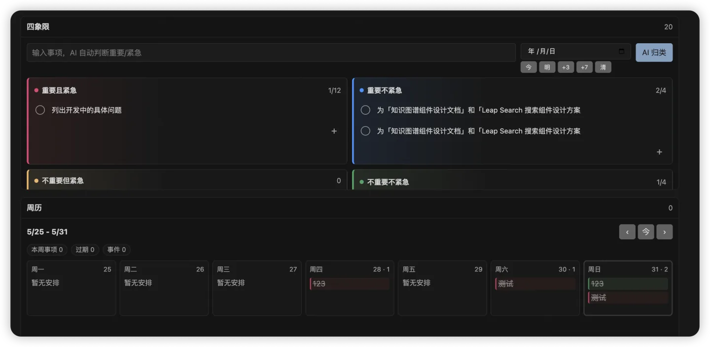
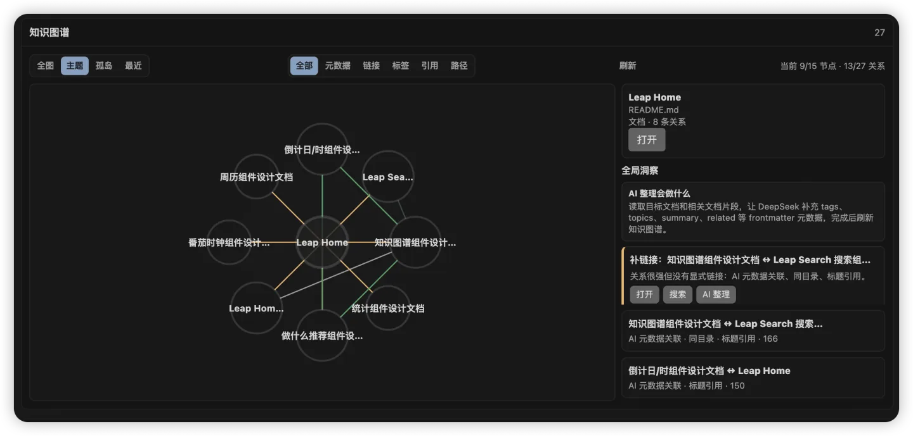

Editor-native Home
Open a knowledge homepage in the editor window instead of squeezing another panel into the sidebar.

Cursor / VS Code extension
A customizable knowledge homepage for Cursor and VS Code.
Search your workspace, capture ideas, plan tasks, track focus, explore knowledge graphs, and let AI suggest what to do next.
给 Cursor / VS Code 的个人知识库首页，把搜索、任务、日历、番茄时钟、知识图谱和 AI 推荐放进一个可自由布局的工作台。
Why it exists
Leap Home turns scattered project files, notes, prompts, tasks, calendar items, and focus records into a single editor-native homepage. It is not a side panel. It is a real workspace surface you can customize.
It is designed for developers who want a practical second-brain dashboard without leaving Cursor or VS Code.
Core workflow
Open a knowledge homepage in the editor window instead of squeezing another panel into the sidebar.
Arrange search, tasks, calendars, focus timer, stats, and graph components on a responsive grid.
Search Markdown, code, prompts, tasks, calendar events, captures, and workspace metadata with commands or AI.
Ask AI to summarize recent context, split stuck tasks, suggest tiny next steps, or write directly into notes.
Components
Product screenshots



AI, but practical
Leap Home uses AI for search understanding, task classification, knowledge organization, and next-action suggestions. It keeps normal workflows local and only sends AI requests when you trigger AI features.
.leap.Get started
Install from Open VSX in Cursor or VS Code-compatible environments.
Run Leap Home: Open Knowledge Home from the command palette.
Create a custom homepage, drag components, resize them, and save your workspace layout.
Set your DeepSeek API key and use AI search, task classification, graph organization, and next actions.
FAQ
Yes. It opens as an editor-window homepage, which is especially useful in Cursor workflows.
It is built on the VS Code extension API and targets VS Code-compatible environments.
Workspace data is stored locally under .leap, separated by component data files.
Only AI-triggered features send relevant context to DeepSeek. Normal search, layout, and storage remain local.
Yes. You can create custom homepages, drag components, resize them, and save multiple layouts.
Leap Home searches workspace files plus Leap data such as tasks, captures, calendar events, prompts, favorites, and AI-interpreted queries.
Leap Home turns daily context into an inspectable, editable, AI-assisted workspace surface.
Install Leap Home